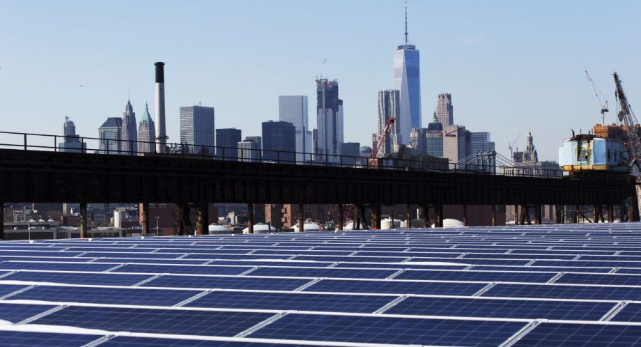
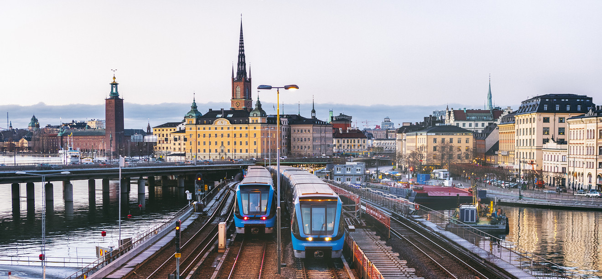
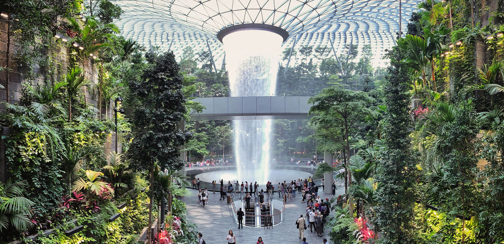

| SDGs 9 and 11 share a great many similarities, as well as possess a few major differences. The two goals share many of the same aims; goal 9 mainly pursues a better quality of life and economic growth, which greatly resembles the intentions of goal 9–sustainability. The two SDGs also have similar desired implimentations, both require the construction of infrastructure, although in different areas. |  |
| SDGs 9 and 11 have almost the same objectives, but they differ in the scope and environmentalism of their approaches. SDG 9 focuses on building infrastructure to improve the devloopment and quality of life of human settlements, while SDG 11 focuses on improving the social, economic, and environmental sustainability of cities. Notably, the aims are overlapping since SDG 11 has the objectives of SDG 9, but with greater sustainability. The targets also have their differences; SDG 11 only focuses on cities, and SDG 9 doesn't focus as much on environmentalism. | |
| Along with following comparable ideals, the two goals follow similar implimentation. SDG 9 aims to build more infrastructure to reach its goals, but SDG 11 also uses infrastructure to achieve sustainability. Goal 11 favours more abundant and acessible services (obtained through infrastructure) for cities to become sustainable. It's also common for infrastructure projects to apply to the two goals since they can improve the quality of life and prosperity of their city, while also making it more sustainable. |  |
|  | Changi Airport is the main international transportation hub of Singapore and an infrastructure example that applies to both SDG 9 and 11. The 13-square-kilometre airport is close to the downtown of the city and had 68.3 million passengers in 2019, making it a great example of transportation infrastructure, as it improves quality of life and provides financial growth. The airport is also sustainable for the city of Singapore; it impliments mixed-use planning with green space, and the airport provides the service of international travel. |